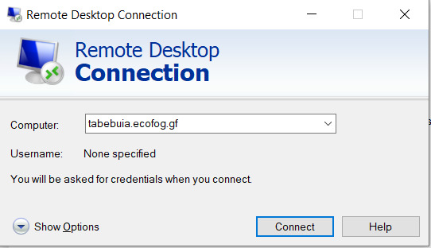
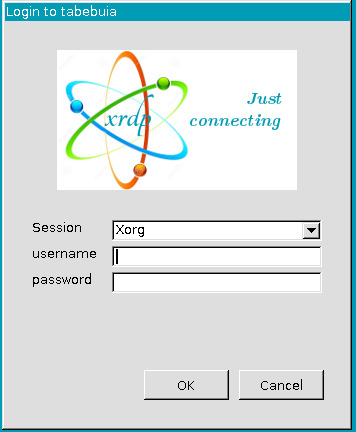
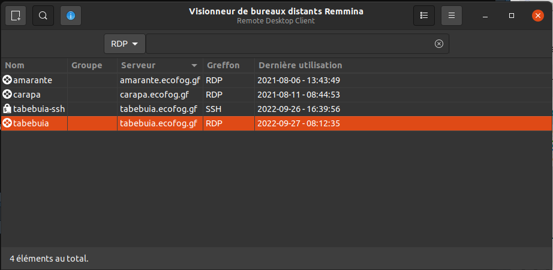
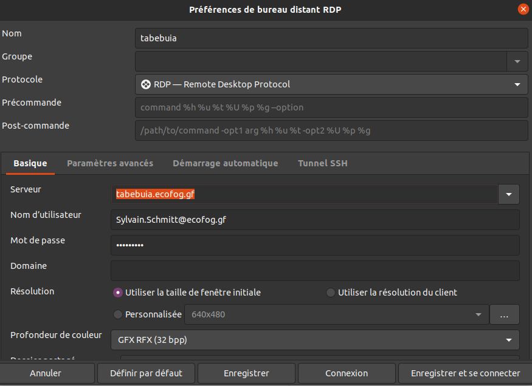
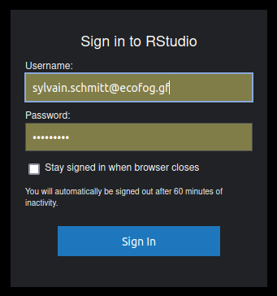
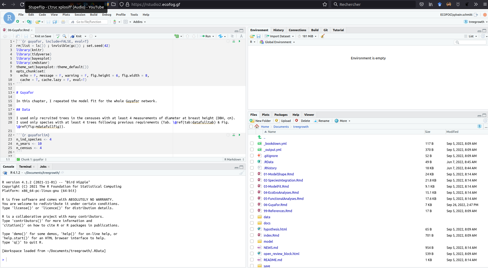

Chapter 1 Connection
1.1 Remote Desktop
The most common connection to Tabebuia is via the Remote Desktop Protocol (RDP) although other methods such as SSH tunneling can be used.
1.1.0.1 Windows
In windows use the “Remote Desktop Connection” tool with the address tabebuia.ecofog.gf:

You will be connected to Tabebuia and have to enter your email and password in the XRDP security to connect to your session:

1.1.1 Linux
Under Linux you can use different tools, but I recommend Remmina which is quite common. In the main window, you can create a profile for the Tabebuia RDP connection:

you can directly enter your user name (email) and password to avoid connecting through XRDP:

1.2 Rstudio server
You may also only want to use R via the Rstudio server and not connect to a remote desktop. For that connect to the interface at: https://rstudio2.ecofog.gf/ .

Use your email and password and you’ll have access to an Rstudio interface within your browser:

More information can be found at: https://support.rstudio.com/hc/en-us/articles/200552306-Getting-Started .